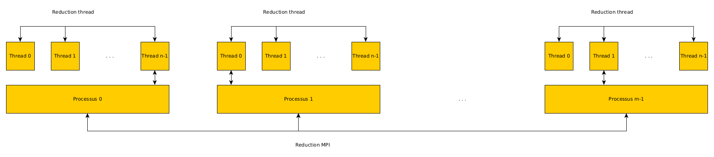
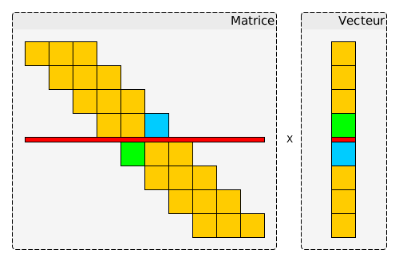

Rapport du Projet Hybrid d'APP
Table of Contents
Le but du projet était de paralléliser un programme séquentielle de gradient conjugué avec une implémentation hybrid MPI / Pthread.
1 Réduction d'une somme hybride MPI / Pthread
1.1 Schéma expliquant la démarche prise

Figure 1: Schéma expliquant la démarche prise
1.2 Explication du code
Mon raisonnement est le suivant:
- Chaque thread de chaque processus MPI va sommer sa valeur avec celle qu'il partage avec ces autres threads en commun (du même processus MPI)
- Une fois que la somme est faites localement sur chaque processus MPI, on élit un thread pour qu'il fasse la réduction avec les autres threads élus des autres processus MPI. Par exemple pour le processus 0, c'est le thread n-1 qui est élu alors que pour le processus 1 c'est le 0. En réalité c'est le premier thread qui finit qui est élu.
- Une fois que les threads élu ont fait leur réduction ensembles. Il faut que les autres threads non élu actualisent leurs réductions.
Pour ce faire j'ai utilisé un sémaphore pour pouvoir élire le premier thread qui arrive. Et à la fin pour l'actualisation du résultat on pourait lâcher tout les threads en faisant que le threads élu fasse une boucle de sempost mais je ne sais pas pourquoi ca ne marchais pas. Donc j'ai laisser l'actualisation en séquentielle.
A la fin de la fonction, j'ai mis une barrière pour pouvoir synchroniser tout les threads de tout les processus MPI, en mettant d'abord une barrier au niveau des threads du même processus pui une barrier entre touts les processus (qui est prise NUMTHREADS fois car je ne sais pas trop comment faire pour qu'un seul thread le fasse sachant que nous n'avons pas l'id du thread).
Et j'ai aussi fait attention de remettre les variables de la structure comme elles étaient initialisés pour le prochain tour de boucle. (je fais donc un sempost pour le dernier threads afin que le premier thread qui arrrive dans le semwait passe).
2 Echange point à point hybrides MPI / Pthread
Pour ce qui est des échanges point à point, cela est relativement la même chose que pour la réduction. Il y 2 grandes parties:
- Echanges entre les threads élu des processus MPI (premier arrivé)
Actualisation entre les threads du même processus MPI avec les valeurs que le thread élu à échangé.
La aussi j'ai utilisé un sémaphore pour élire le premier thread. Et comme pour la réduction hybride j'ai fait attention à réinitialisé les variables pour le dernier thread.
3 Algorithme du gradient conjugué parallèle MPI / Pthread
3.1 Initialisation
La seule chose à prendre en considération c'est que c'est le premier thread du premier processus MPI qui contient la valeur du i global égale à 0.
Et que c'est le dernier thread du dernier processus MPI qui contient la valeur i global égale à i global maximum du tableau.
3.2 Réduction
Il y a 2 fonction qui font une réduction:
- le calcul de la norme au carré
- le rapport de 2 profuits scalaire
En réalisté ce sont toutes les fonctions qui font une réduction en séquentielle et qui retourne un flottant.
Donc pour ces 2 fonctions j'ai utilisé la fonction de réduction hybride.
3.3 Produit matrice vecteur
J'ai fait un cas spécial pour le cas où il n'y a qu'un processus MPI, car le i = 0 gloabal est contenu par le premier thread et le i = maxite global est contenu par le dernier thread. Donc il n'y a pas d'échange à faire.
Sinon je sépare les cas:
- premier processus mpi
- dernier processus mpi
- autres processus mpi
Car le dernier thread du premier processus échangera uniquement vers la droite. Le premier thread du dernier processus échangera uniquement vers la gauche. Les autres processus échangeront à gauche avec leurs premier thread et avec la droite avec leurs dernier thread.
Le tableau partagé est bien sûr le vecteur vx, qui est décomponsé en plusieurs partie MPI / Pthread. Comme le montre le schéma suivant:

Figure 2: Schéma expliquant les échanges
Ici nous avons 2 processus MPI (avec imaginons 2 threads chancun). Nous voyons bien que pour faire le produit matrice x vecteur le premier processus a besoin du premier élément du vecteur de 2 ème processus. Et inversement le 2 ème processus à besoin de la dernière valeur du vecteur du premier processus.
4 Conclusion
Comme vous allez le voir à l'exécution, mon implémentation donne un résultat faux mais je ne comprends pas pourquoi. Si jamais vous avez un retour sur mon implémentation ou mon raisonnement je suis prenneur.